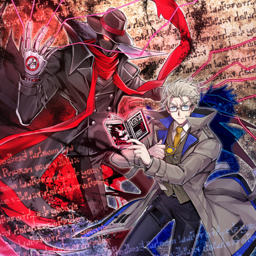

One day, a young boy got his hands on the latest issue of "Firestarter" and hurried home. Then suddenly he heard an inexplicable roar and scream. The boy turned a corner and saw a black shadowy monster he'd never seen before, and his classmate lying on the street!
The moment he saw the shadow was about to attack the girl, the boy rushed forward without a second thought! But then, at that moment, the copy of "Firestarter" in his hand began to glow with a dazzling radiance, as a miracle occurred!
What flew out of the comic book was the superhero he admired, "Firestarter"! «In order to manifest my power in this world, lend me your body!» The young boy agreed, and united with "Firestarter"!
The boy narrowly defeated the monster that attacked the girl. The true identity of the monster was similar to "Firestarter", it was a member of a group of villains that had appeared from the book, hijacking people's bodies. The boy finally rescued the girl and the person who had been hijacked, but then foes appeared one after another, and the situation took a turn for the worse!

Then he grabbed the girl and tried to run, but he ended up cornered in an alleyway. In the blink of an eye, the enemy was instantly struck down and restrained by a man with the same hero powers as the boy...!
